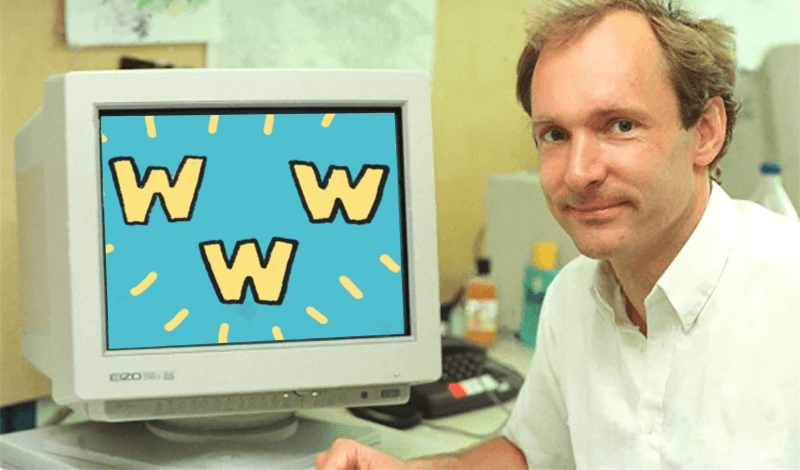

Det bygger på ganska många olika saker men förenklat kan man tänka att det betyder dels att webbplatser eller dokument har en adress, en URL, som talar om hur man hittar dit, och dels ett system för hur webbläsare kan läsa och visa innehåll.
Idag låter det helt självklart, men innan fanns det nästan inga system för att enkelt länka till och mellan saker. Allt låg spritt utan samordning. Att surfa på internet var det alltså inte tal om förrän Tim kommer in i bilden.
Här har ni datorn som Tim Berners Lee använde till världens första webbserver. (CC BY-SA 3.0)
Under 1989 skapar han den första webbplatsen, för forskningscentrumet CERN i Schweiz där WWW skapats. Men först 6 augusti 1991 gör Tim sajten och webben tillgänglig för alla genom att posta inlägg om sin skapelse på offentliga nyhetsgrupper. Den första hemsidan finns fortfarande kvar i samma utformning. Besök själv: info.cern.ch
Faktiskt helt själv.
En viktig händelse, som på allvar fått fart på webbens spridning, inträffar i april 1993. Då beslutar Cern att släppa rättigheterna till WWW fria. Därmed kan systemet spridas över hela världen. Och det internet vi känner i dag blir till. Det skadar inte heller att webbläsaren Mosaic – som kan visa bilder! – släpps samma år.
1994 flyttar Tim Berners-Lee till MIT i USA och grundar där the World Wide Web Consortium (W3C), som är en internationell organisation som främjar en öppen webb. Han leder fortfarande organisationen.